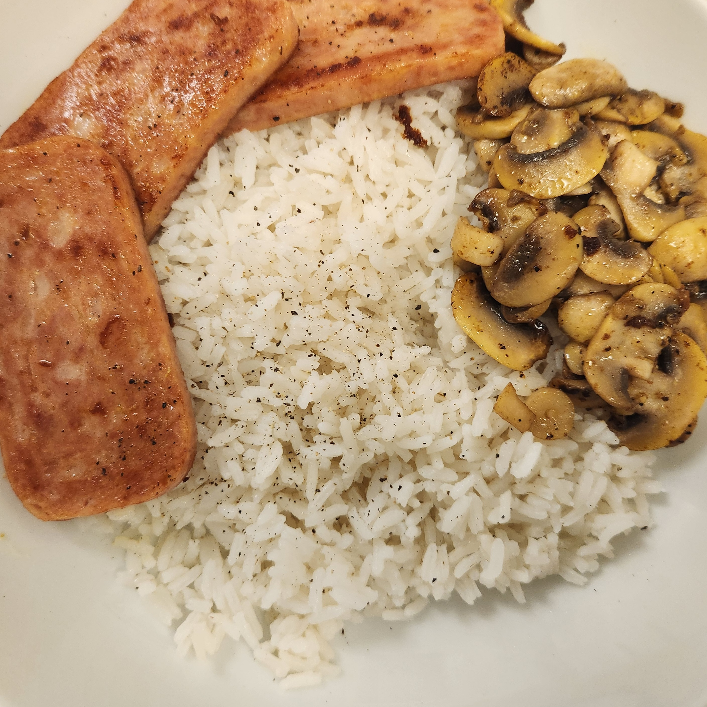

My Comfort Meal

Description
This meal isn't the healthiest but I love eating this. Not much effort is required
but the luncheon meat and mushrooms go well with plain white rice.
Ingredients
- 0.5 cup uncooked white rice
- 200 g luncheon meat
- 100 g button mushrooms
- 1 cup frozen mixed vegetables
- ¼ teaspoon salt
- 1 teaspoon ground black pepper
- 1 tablespoon cooking oil
Steps
- Wash the rice and cook in a rice cooker.
- While waiting for the rice to cook, cut the luncheon meat and mushrooms into slices.
- Add oil to a pan and place the luncheon meat.
- Cook and flip both sides until crispy.
- Let them rest on another plate and add your mushrooms.
- Add salt and black pepper when the mushroom turns brown.
- Serve on top of steaming white rice!